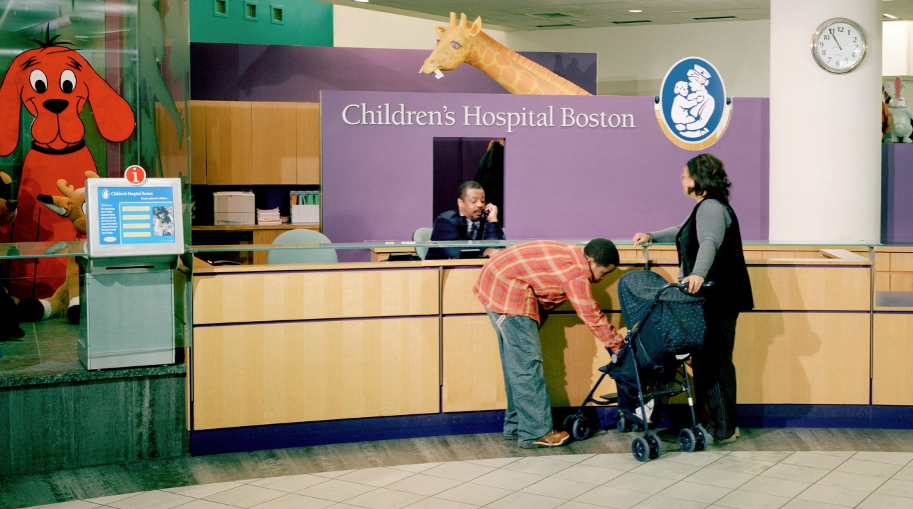
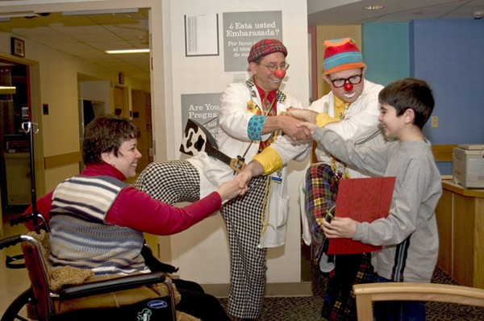

WebGL for Baby Brains:
Neuroimaging in the Browser
 
Fetal-Neonatal Neuroimaging and Developmental Science Center
.. or short:
FNNDSC
Interdisciplinary research group
Physicians, Psychologists, Physicists, Bio-Engineers..
Director: P. Ellen Grant, MD
http://childrenshospital.org/FNNDSC
http://fnndsc.github.com
Loading...
You might think it is boring...
Loading...
You might think it is boring2...
Loading...
You might think it is boring3...